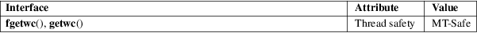

fgetwc, getwc − read a wide character from a FILE stream
Standard C library (libc, −lc)
#include
<stdio.h>
#include <wchar.h>
wint_t
fgetwc(FILE *stream);
wint_t getwc(FILE *stream);
The fgetwc() function is the wide-character equivalent of the fgetc(3) function. It reads a wide character from stream and returns it. If the end of stream is reached, or if ferror(stream) becomes true, it returns WEOF. If a wide-character conversion error occurs, it sets errno to EILSEQ and returns WEOF.
The getwc() function or macro functions identically to fgetwc(). It may be implemented as a macro, and may evaluate its argument more than once. There is no reason ever to use it.
For nonlocking counterparts, see unlocked_stdio(3).
On success, fgetwc() returns the next wide-character from the stream. Otherwise, WEOF is returned, and errno is set to indicate the error.
Apart from the usual ones, there is
|
EILSEQ |
The data obtained from the input stream does not form a valid character. |
For an explanation of the terms used in this section, see attributes(7).

C11, POSIX.1-2008.
POSIX.1-2001, C99.
The behavior of fgetwc() depends on the LC_CTYPE category of the current locale.
In the absence of additional information passed to the fopen(3) call, it is reasonable to expect that fgetwc() will actually read a multibyte sequence from the stream and then convert it to a wide character.
fgetws(3), fputwc(3), ungetwc(3), unlocked_stdio(3)